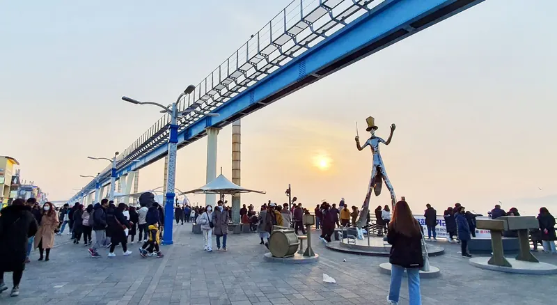
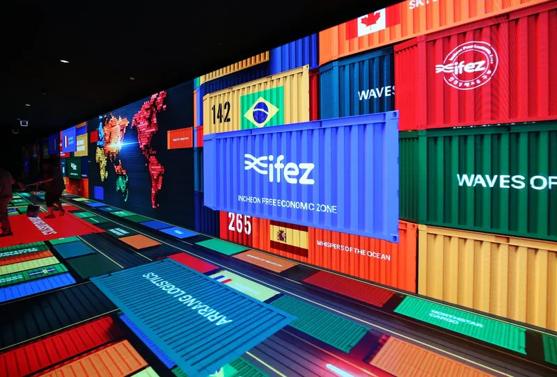

장소명, 지역(제물포·송도·강화·영종…), 테마(섬·역사·야경·미식), 자료명, 공지 제목으로 검색할 수 있습니다.

협의회와 함께하는 관광 협업
정관 제5조(사업)에 근거한 8대 협업 트랙입니다. 수요 근거 → 수익구조 → 운영주체가 갖춰진 제안을 환영합니다.
거점별 자원을 상품으로 전환합니다. 관심(검색)×이동(유동인구)×소비(카드) 데이터로 수요를 검증하고, 체류·객단가를 높이는 코스를 설계합니다.
정관 제5조 1·5호관광안내소 운영 노하우(2020~2023 10개소 수탁, 민간위탁 평가 '우수', 만족도 95.6점)를 바탕으로 안내·통역·수용태세 개선 서비스를 제공합니다.
정관 제5조 1·2호인천 글로벌 K-POP(INK) 콘서트 홍보·모객(2023·2025, 약 2만5천 명), 관광활성화 낭독콘테스트, 관광기념품 공모전 등 행사 기획·운영 경험을 보유합니다.
정관 제5조 5·7호송도 국제회의복합지구(ICCA 2025 국내 3위)의 회의 참가자를 인천 체류·관광으로 전환하는 Pre/Post 투어, 유니크베뉴 연계를 기획합니다.
정관 제5조 4·5호관광종사원 교육·사후관리(정관 제5조 6호)와 웰니스 문화관광 교육프로그램 운영 경험을 바탕으로 가이드·안내 인력과 관광 전문가를 양성합니다.
정관 제5조 6호한중 문화예술 교류전(2021~2024)을 비롯해 해외 관광기관·도시와의 교류, 공동 마케팅, 팸투어를 기획합니다.
정관 제5조 7호공항·항만·바이오·반도체·로봇 등 인천의 산업 자산을 방문 프로그램으로 설계합니다. 남동산단 등 산업단지의 방문객 유치·안내·경험 관리를 담당합니다.
정관 제5조 5·11호환승관광(연 804.6만 환승객), 의료·웰니스, 섬·해양, 역사(개항장·강화) 등 테마별 인바운드 상품을 기획해 서울과 보완 관계로 인천 체류를 만듭니다.
정관 제5조 2·5호
거점별 자원을 상품으로 전환합니다. 관심(검색)×이동(유동인구)×소비(카드) 데이터로 수요를 검증하고, 체류·객단가를 높이는 코스를 설계합니다.

관광안내소 운영 노하우(2020~2023 10개소 수탁, 민간위탁 평가 '우수', 만족도 95.6점)를 바탕으로 안내·통역·수용태세 개선 서비스를 제공합니다.

인천 글로벌 K-POP(INK) 콘서트 홍보·모객(2023·2025, 약 2만5천 명), 관광활성화 낭독콘테스트, 관광기념품 공모전 등 행사 기획·운영 경험을 보유합니다.
송도 국제회의복합지구(ICCA 2025 국내 3위)의 회의 참가자를 인천 체류·관광으로 전환하는 Pre/Post 투어, 유니크베뉴 연계를 기획합니다.

관광종사원 교육·사후관리(정관 제5조 6호)와 웰니스 문화관광 교육프로그램 운영 경험을 바탕으로 가이드·안내 인력과 관광 전문가를 양성합니다.

한중 문화예술 교류전(2021~2024)을 비롯해 해외 관광기관·도시와의 교류, 공동 마케팅, 팸투어를 기획합니다.

공항·항만·바이오·반도체·로봇 등 인천의 산업 자산을 방문 프로그램으로 설계합니다. 남동산단 등 산업단지의 방문객 유치·안내·경험 관리를 담당합니다.

환승관광(연 804.6만 환승객), 의료·웰니스, 섬·해양, 역사(개항장·강화) 등 테마별 인바운드 상품을 기획해 서울과 보완 관계로 인천 체류를 만듭니다.
관광상품 기획·축제·MICE·인바운드까지. 협의회와의 협업을 제안해 주세요.